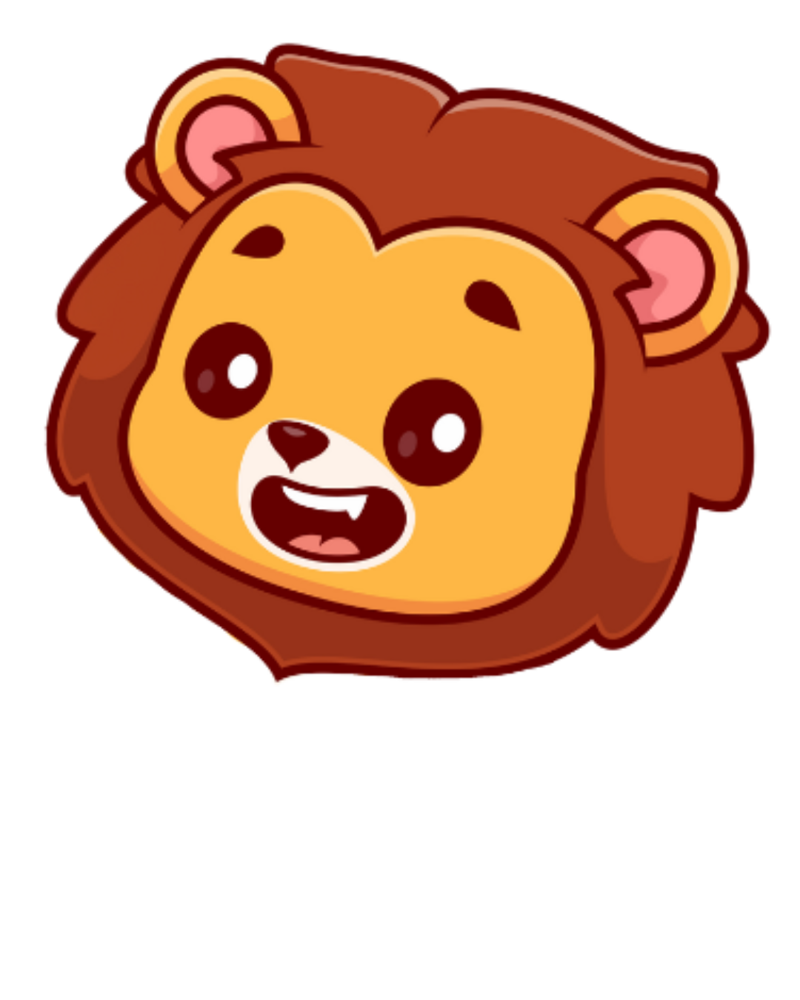
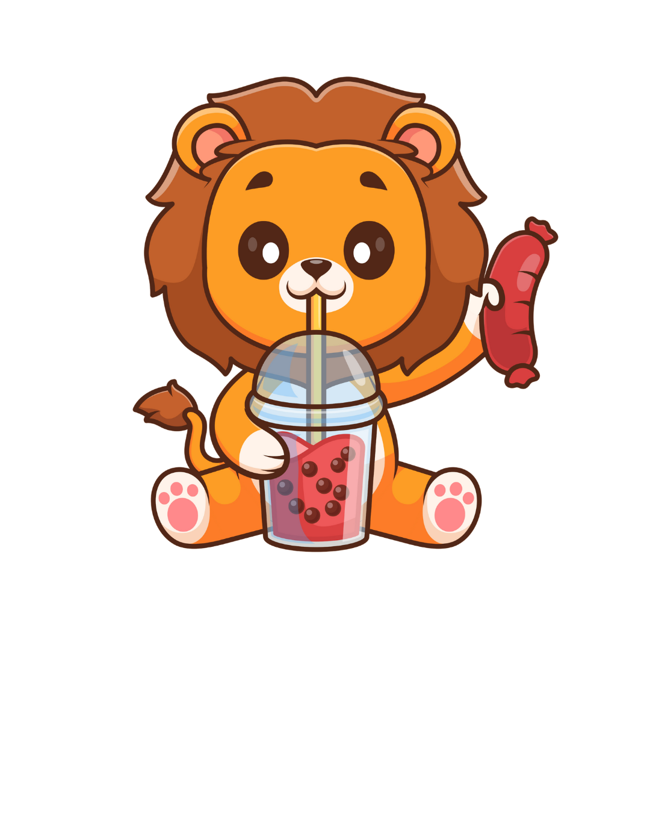
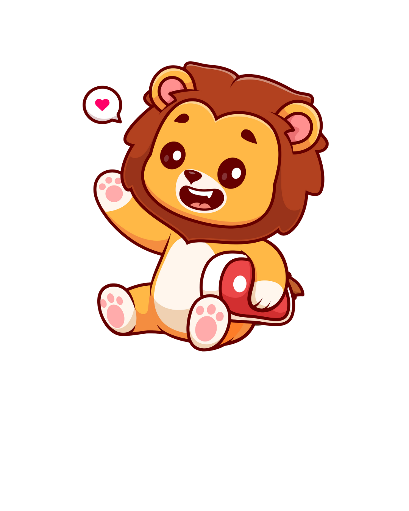
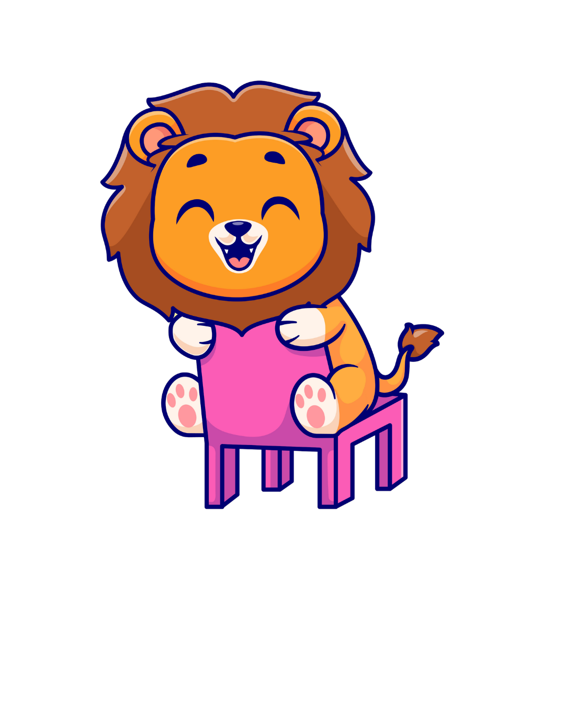
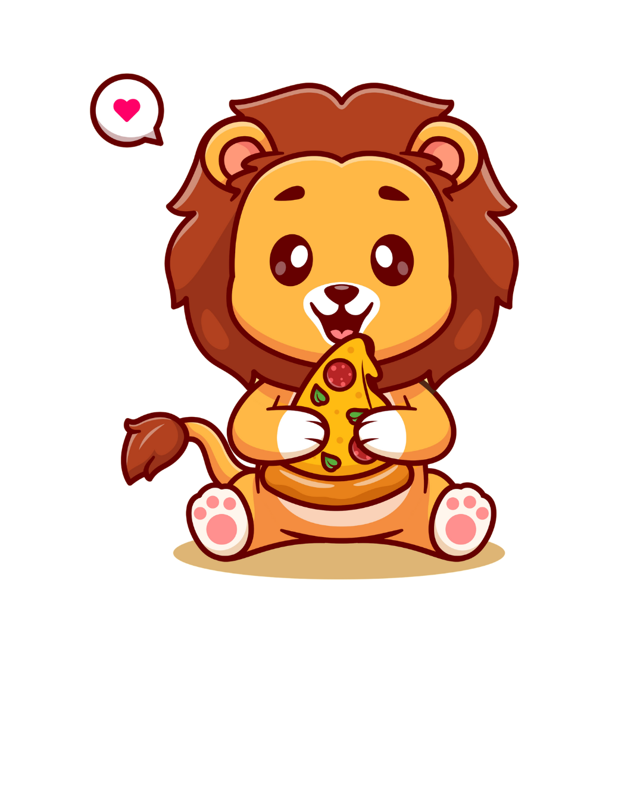

Ingresa tu nombre aquí:
Si has sido el destinatario de este mensaje es porque, aunque no sea relevante…
Tu sí lo eres para mi vida.
Gracias por una amistad que salió quizá de lo más random o de las circunstancias de la vida, me alegra conocerte y considerarte mi amigo, quizá no siempre sea emotivo o hable mucho, quizá no nos contemos todo lo que nos pasa, pero sabes que de mí tendrás siempre una amistad sincera y con deseos de compartir algo juntos, un mensaje, un meme, una llamada, un paseo, una comida, un rato chill, siempre será un placer y si algún día te encuentras en dificultad sabes que ahí estaré porque como dicen “un amigo es leal y como un hermano en necesidad”.
Así que solo quiero decirte gracias, gracias por tu amistad, ¡¡por ser una gran persona tal como eres!!
¿Qué quieres hacer ahora?
Si me gusta, te invitaré algo (las estaré escuchando este día 🎧).
No hay combinación de palabras que podría poner en el reverso de una postal.
There's no combination of words I could put on the back of a postcard.
No hay canción que pueda cantar, pero puedo intentarlo por tu corazón.
No song that I could sing, but I can try for your heart.
Nuestros sueños, y están hechos de cosas reales.
Our dreams, and they are made out of real things.
Como una caja de zapatos de fotografías.
Like a shoe box of photographs.
Con amor en tonos sepia.
With sepia-toned loving.
El amor es la respuesta, al menos para la mayoría de las preguntas de mi corazón.
Love is the answer, at least for most of the questions in my heart.
¿Por qué estamos aquí?
Like why are we here?
¿Y adónde vamos?
And where do we go?
¿Y por qué es tan difícil?
And how come it's so hard?
No siempre es fácil y.
It's not always easy and.
A veces la vida puede ser engañosa.
Sometimes life can be deceiving.
Te diré una cosa, siempre es mejor cuando estamos juntos.
I'll tell you one thing, it's always better when we're together.
Mmm, siempre es mejor cuando estamos juntos.
Mmm, it's always better when we're together.
Sí, miraremos las estrellas cuando estemos juntos.
Yeah, we'll look at the stars when we're together.
Bueno, siempre es mejor cuando estamos juntos.
Well, it's always better when we're together.
Sí, siempre es mejor cuando estamos juntos.
Yeah, it's always better when we're together.
Y todos estos momentos.
And all of these moments.
Quizás encuentren su camino hacia mis sueños esta noche.
Just might find their way into my dreams tonight.
Pero sé que se habrán ido.
But I know that they'll be gone.
Cuando la luz de la mañana canta.
When the morning light sings.
O trae cosas nuevas.
Or brings new things.
Para mañana por la noche verás.
For tomorrow night you see.
que ellos también se habrán ido.
That they'll be gone too.
Demasiadas cosas que tengo que hacer.
Too many things I have to do.
Pero si todos estos sueños pudieran encontrar su camino.
But if all of these dreams might find their way.
En mi escena del día a día.
Into my day to day scene.
estaría bajo la impresión.
I'd be under the impression.
Yo estaba en algún punto intermedio.
I was somewhere in between.
con solo dos.
With only two.
solo tu y yo.
Just me and you.
No hay tantas cosas que tenemos que hacer.
Not so many things we got to do.
O lugares donde tenemos que estar.
Or places we got to be.
Nos sentaremos debajo del árbol de mango ahora.
We'll sit beneath the mango tree now.
Sí, siempre es mejor cuando estamos juntos.
Yeah, it's always better when we're together.
Mmm, estamos en algún punto intermedio juntos.
Mmm, we're somewhere in between together.
Bueno, siempre es mejor cuando estamos juntos.
Well, it's always better when we're together.
Sí, siempre es mejor cuando estamos juntos.
Yeah, it's always better when we're together.
creo en los recuerdos.
I believe in memories.
Se ven tan, tan bonitos cuando duermo.
They look so, so pretty when I sleep.
Oye ahora y cuando me despierte.
Hey now and, and when I wake up.
Te ves tan bonita durmiendo a mi lado.
You look so pretty sleeping next to me.
Pero no hay suficiente tiempo.
But there is not enough time.
Y no hay ninguna canción que pueda cantar.
And there is no, no song I could sing.
Y no hay combinación de palabras que pueda decir.
And there is no combination of words I could say.
Pero aun así te diré una cosa.
But I will still tell you one thing.